Publications
Selected Publications (Full List of Publications)
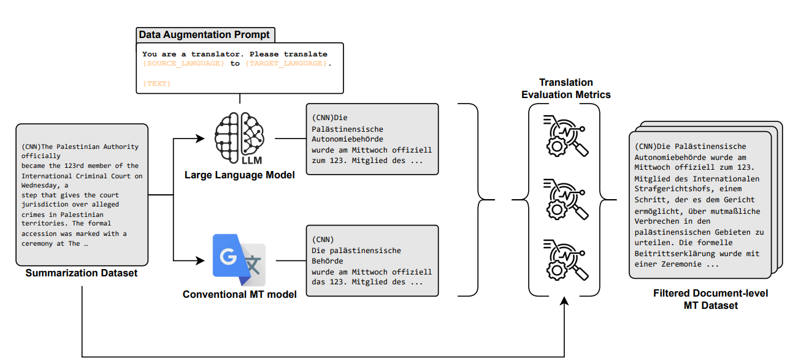
Enhancing Document-Level Machine Translation via filtered synthetic corpora and two-stage LLM adaptation
Proc. ICASSP, 2026.
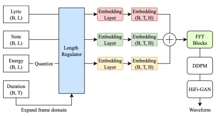
Controllable Singing Voice Synthesis using Phoneme-Level Energy Sequence
Proc. ASRU, 2025.
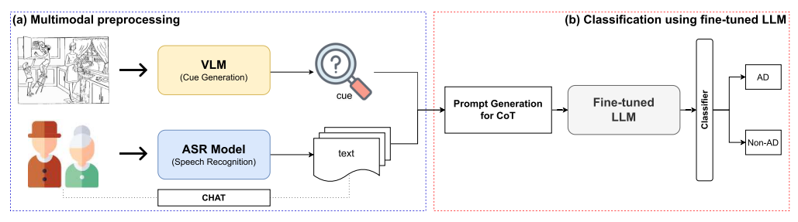
A Novel Chain-of-Thought Reasoning Approach for Alzheimer’s Disease Detection Using Large Language and Vision-Language Models
IEEE Transactions on Neural Systems and Rehabilitation Engineering (TNSRE), 2025.
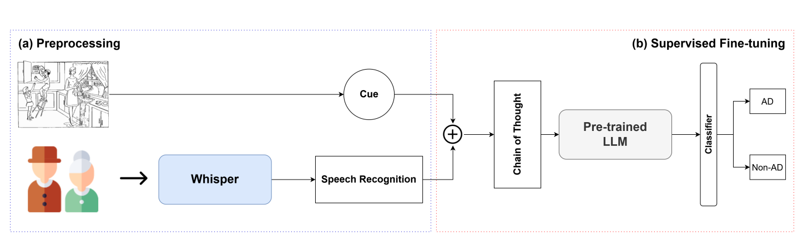
Reasoning-Based Approach with Chain-of-Thought for Alzheimer’s Detection Using Speech and Large Language Models
Proc. Interspeech, 2025.
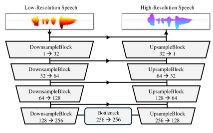
Wave-U-Mamba: An End-To-End Framework For High-Quality And Efficient Speech Super Resolution
Proc. ICASSP, 2025.
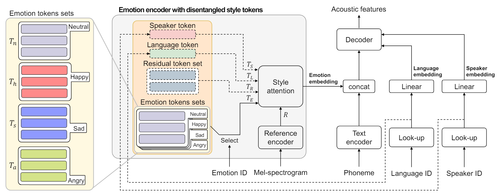
Mels-Tts: Multi-Emotion Multi-Lingual Multi-Speaker Text-To-Speech System Via Disentangled Style Tokens
Proc. ICASSP, 2024.
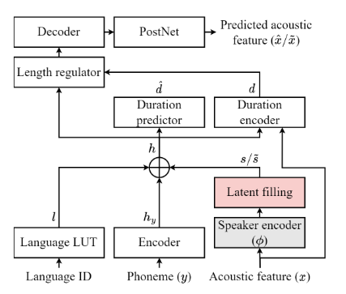
Latent Filling: Latent Space Data Augmentation for Zero-Shot Speech Synthesis
Proc. ICASSP, 2024.
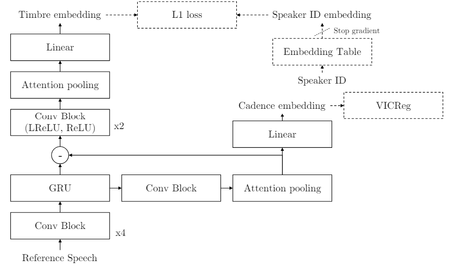
Hierarchical Timbre-Cadence Speaker Encoder for Zero-shot Speech Synthesis
Proc. INTERSPEECH, 2023.
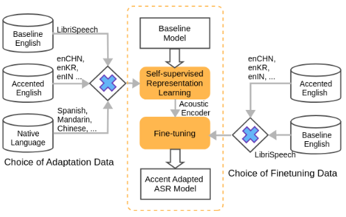
Self-Supervised Accent Learning for Under-Resourced Accents Using Native Language Data
Proc. ICASSP, 2023.
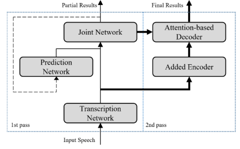
Conformer-Based on-Device Streaming Speech Recognition with KD Compression and Two-Pass Architecture
Proc. SLT, 2022.
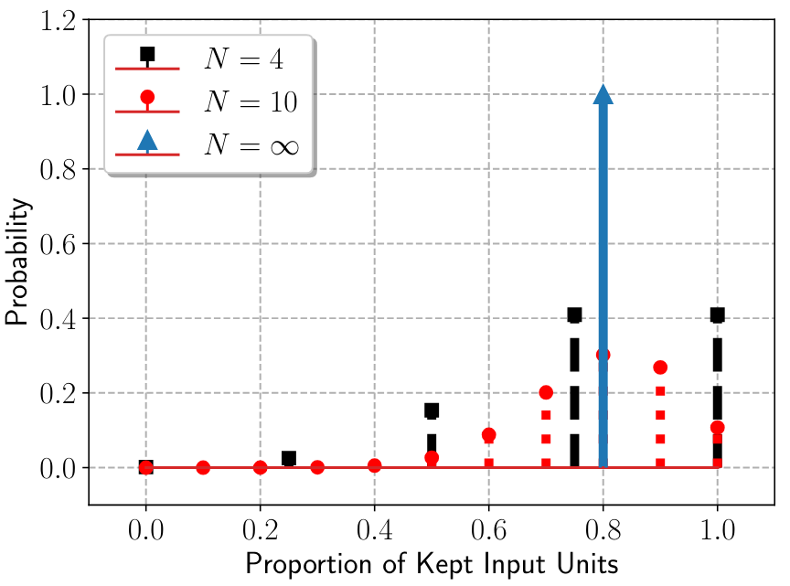
Macro-Block Dropout for Improved Regularization in Training End-to-End Speech Recognition Models
Proc. SLT, 2022.